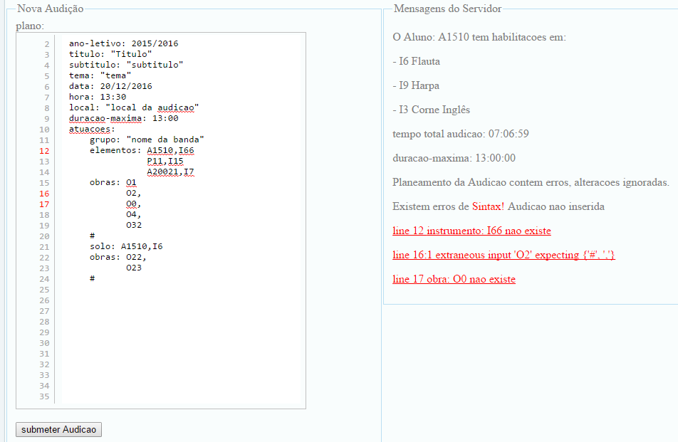

a62819 - Luís Miguel Fernandes Vieira
pg30469 - Oleskii Gylytskyy
Indice |
IntroduçãoEstrutura da AplicaçãoBase de DadosPara armazenar a informação optamos por usar uma Base de Dados MySQL, isto é uma Base de Dados Relacional o que permite manter a concistência dos dados. A imagem acima, mostra a estrutura da informação guardada na BD. As relações mais importantes desta estrutura são Aluno-Instrumento, Aluno-Curso, Professor-Curso e Professor-Instrumento. A relação Aluno-Instrumento serve para validar os planeamentos das audições, podemos dizer o mesmo da relação Professor-Instrumento. A relação Aluno-Curso foi utilizada para mostrar avisos lançados pelos docentes do curso em questão, por sua vês a relação Professor-Curso serve o mesmo propósito. GramáticaFoi desenvolvida uma gramática em ANTLR e criado um JAR para ser executado no momento em que um utilizador submete uma nova audição. A gramática faz validações sintáticas e semânticas ao planeamento de uma audição, e devolve feedback informando o utilizador caso exista algum erro. É também importante criar uma zona de exclusão mútua para executar o parser, uma vez que é este que atualiza o ficheiro XML que contém todas as audições. De seguida mostra-se a estrutura básica de uma audição sem regras, condições e O editor integrado permite visualisar de forma rápida e intuitiva os vários tipos de erros que a gramática é capaz de identificar. como existe um elevado número de simbolos sintáticos que o utilizador tem de usar, é apresentado um botão com um planeamento exemplo, para acelarar o inicio do processo de planeamento. SegurançaPara tratar da segurança dos utilizadores do sistema, utilizamos uma tecnologia de Cookies que permite identificar únicamente um utilizador em cada sessão. Quando um utilizador efetua o login, e caso seja bem sucedido, é gerada uma string que é enviada para o cliente, e simultaneamente guardada na base de dados, onde fica associada com o utilizador. Esta string serve para identificar os utilizadores e controlar o acesso às funcionalidades do sistema. FuncionalidadesExistem três perfis de utilizador, o perfil de administrador, alunos e professor. O perfil de administrador está limitado à funcionalidade de adicionar novos utilizadores ao sistema. O perfil de aluno apenas pode alterar os seus dados pessoais e de utilizador, e consultar informação relativa a audições e avisos relativos aos cursos nos quai está matriculado. O perfil de professor tem permissão para consultar e editar as informações pessoais, informações de utilizador, criar, eliminar e editar avisos lançados pelo próprio para um determinado curso que leciona. Pode também importar e exportar audições, alunos professores, e cursos. Relativamente a audições pode criar, alterar e eliminar audições. Importar/Exportar InformaçãoÉ possivel importar/exportar as informações relativas e alunos, cursos, professores e audições. De seguida mostramos um exemplo demonstrativo de validações que são realizadas na acção de importar qualquer um dos tipos de informação.
Primeiro o tipo do ficheiro é validado, só depois é que a função acima executa o seu código. A função importStudents() começa por validar a formatação do xml com auxilio do XML Schema que está de acordo com o tipo de informação que estamos a importar, se for inválido lança um aviso para o utilizador, caso contrário avança para um ciclo onde verifica se esta informação já existe na BD actual através da função checkStudentId(), que devolve um código de erro (-1, $stId=null; -2, erro no SQL; -3, estudante não existe na BD; 1, aluno já existe) De seguida está a função para exportar informação relativa aos alunos que se encontram registados no sistema. Um função para exportar informação em formato XML, começa por trazer da BD a informação da tabela 'aluno' (id, nome, dataNascimento, mail, mobile), com o id de cada um dos alunos podemos conultar toda a informação que lhe diz respeito e guardar no respectivo formato XML, concebido para este tipo de exportações, momento em que é feita a verificação adicional com o respectivo XML Schema. Criar Editar e Eliminar AudiçõesPara Criar/Editar audições existe um editor de texto integrado que auxilia na correção do planeamento de cada uma das audições. A correção deste planeamento (validação sintática e semântica) é realizada por uma gramática desenvolvida em ANLTR que se encontra no servidor, e actualiza um ficheiro XML que contém todas as audições que correspondem a um determinado ano letivo. Para audições que já tenham ocorrido é retirada a opção de editar, acontece o mesmo para audições cujo organizador não é o professor que está a consultar a listagem. AvisosEstá implementado também um sistema de avisos para os professores comunicarem com os alunos através de mensagens. De seguida podemos ver a página inicial de um aluno com um aviso para o curso "CS18", que este frequenta. Estes avisos são criados pelos professores que lecionam os respectivos cursos, e estes têm ao seu dispor um conjunto de funcionalidades minimas para gerir estes avisos. A criação/edição destes avisos é feita através da interface que se mostra na imagem que se segue. ConclusãoO desenvolvimento deste sistema recorre a várias tecnologias, como por exemplo HTTP, MySQL, GIT, ANTLR, AJAX, JSON etc. Como tal a integração de todos estes componentes foi especialmente dificil. O sistema desenvolvido disponibiliza um conjunto de funcionalidades que facilitam a programação de audições e a comunicação entre os docentes e os alunos, para além disso permite também importar e exportar toda a informação relevante utilizada pelo sistema. Fica por implementar a geração de um anúncio para redes sociais e gerar um .pdf com recurso a bibliotecas PHP. FicheirosDicionário de dados - BD_GAMu.pdf Relatório Gramática - Relatorio_GAMu Script Inserções SQL - insertsSQL |